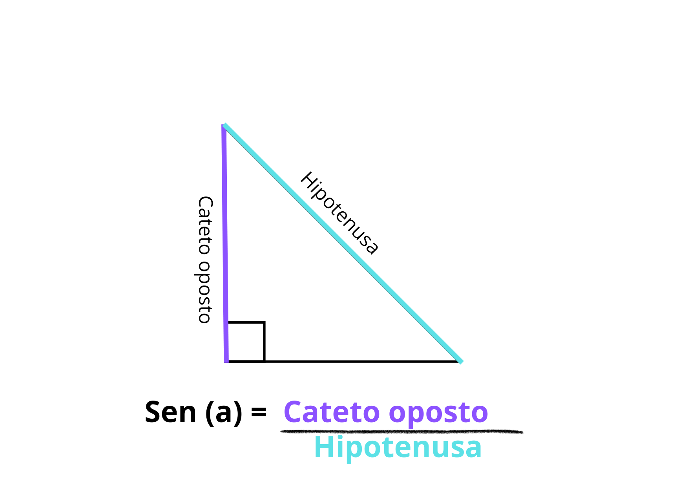
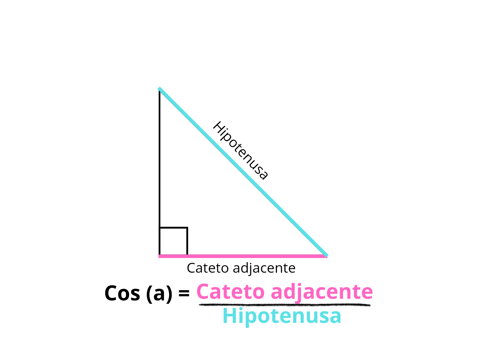
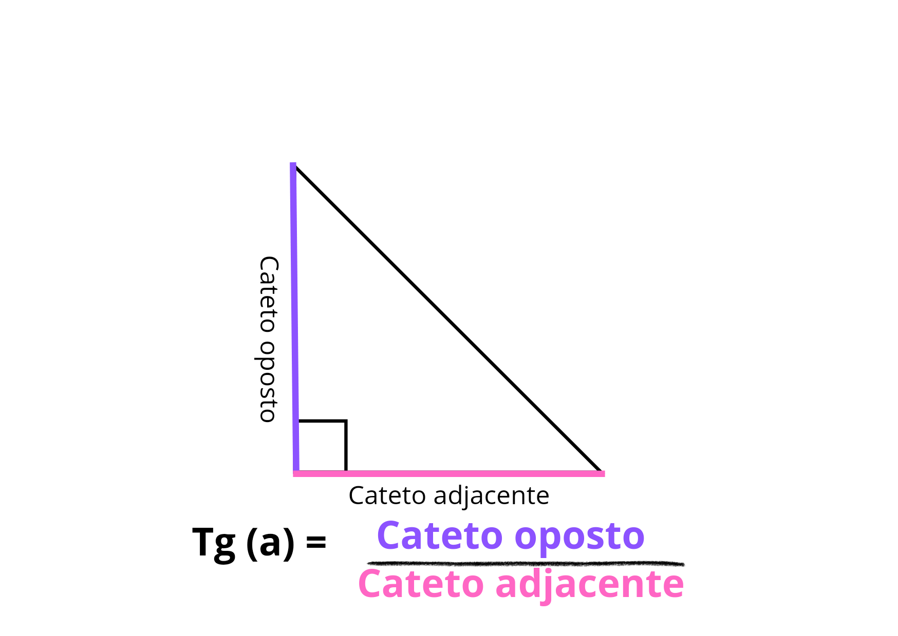

Trigonometria
A trigonometria é um ramo da matemática que estuda as relações entre os ângulos e os lados de um triângulo.
Pergunta 1
Qual é o seno de 30°?
1/2
Pergunta 2
Qual é o cosseno de 45°?
√2/2
Pergunta 3
Quais ângulos têm seno valendo ½?
30º e 150º.
Pergunta 4
Qual o sinal do seno dos ângulos do 3º Quadrante?
Eles são negativos
Pergunta 5
Qual a tangente de 90º?
Não existe
Pergunta 6
Qual ângulo tem seno valendo 1?
O ângulo de 90º
Pergunta 7
Quais ângulos têm cosseno valendo 150º e 210º
-(√3/2)
Pergunta 8
Em qual quadrante as medidas (seno, cosseno e tangente) são todas positivas?
1º Quadrante
Pergunta 9
Qual o seno de 180º?
0
Pergunta 10
O seno de 45º é que outro ângulo tem esse mesmo valor de seno?
135º
Seno
O seno de um ângulo em um triângulo retângulo é definido como o comprimento do cateto oposto dividido pela hipotenusa. Para calcular, é necessário do comprimento do cateto oposto dividido pelo comprimento da hipotenusa.
Cosseno
O cosseno de um ângulo em um triângulo retângulo é definido como o comprimento do cateto adjacente dividido pela hipotenusa. Para calcular, é necessário do comprimento do cateto adjacente dividido pelo comprimento da hipotenusa.
Tangente
A tangente de um ângulo em um triângulo retângulo é definida como o cateto oposto dividido pelo cateto adjacente do mesmo ângulo. Para calcular, é necessário do comprimento do cateto oposto dividido pelo comprimento do cateto adjacente.